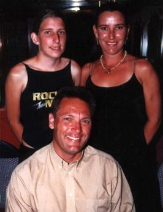

Tamsyn Lee Henning (*1985)
Voorgeslagte
|
Nageslagte
|
Foto(s)
Genealogiese no.
a2.b7.c8.d8.e1.f5.g1.h1.
Voorname
Tamsyn Lee
Van
Henning
Geslag
Vroulik
Vader
Stanley Henning
Moeder
Mary-Anne Hattingh
# ste kind van vader
1
Noemnaam
Tamsyn Lee
Geboortedatum
1985-9-21
Geboorteplek
Doopdatum
Doopplek
Sterfdatum
Sterfplek
Geskiedenis
Dogter van Mary-Anne wettig aangeneem deur Stanley.
Voorgeslagte van Tamsyn Lee Henning (*1985)
Generasies
2
3
4
5
6
/¯¯
Olivier Johannes Gerhardus Cornelis Henning (*1834, †1919)
/¯¯
Olivier Johannes Henning (*1869, †1918)
\__
Cornelia Susanna Kotze (*1839, †1912)
/¯¯
Stanley Henning (*1904, †1991)
/¯¯
Arthur Beeton (*1839, †1883)
\__
Magdalena Maria Daisy Beeton (*1877, †1958)
\__
Wilhelmina Margaretha Vos (*1850, †1917)
/¯¯
Gideon Stephanus Henning (*1935, †2023)
/¯¯
Gideon Stephanus Greyling
\__
Dina Margaretha Jacoba Greyling (*1907, †1989)
/¯¯
Stanley Henning (*1959)
/¯¯
Alewijn Bernardus Johannes Dippenaar (*1896, †1971)
\__
Johanna Wilhelmina Catharina Dippenaar (*1936, †2020)
\__
Johanna Wilhelmina Catharina Wessels (*1905, †1995)
Tamsyn Lee Henning (*1985)
\__
Mary-Anne Hattingh (*1966)
Fotos

b7.c8.d8.e1.f5.g1. Stanley Henning *6-8-1959, sy vrou Mary-Anne (gebore Hattingh) *20-2-1966 en hul dogter Tamsyn Lee *21-9-1985
Beskou lys van mense op foto
Mary-Anne Hattingh
Stanley Henning
Tamsyn Lee Henning